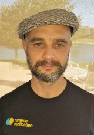

Grigore Roşu
Professor, Siebel School of Computing and Data Science
University of Illinois at Urbana-Champaign ·
grosu@illinois.edu
I work on programming language design and semantics, formal methods and
verification, and on artificial intelligence and its applications to autogeneration
of formally verified code from intent. I coined the field
Runtime Verification
in 2001 in a NASA workshop, and created the
K framework in 2003 and its logical foundation,
matching logic, from 2010 on.
I lead the Formal Systems Laboratory (FSL), which I founded in 2002 when I
joined Illinois from NASA. I founded the companies
Runtime Verification,
Pi Squared and Intent Computing. I am an
IEEE Fellow
and an AAAS Fellow.
Teaching
- Spring 2026: CS521 – Foundations of Crypto: From Blockchain to Present
- Fall 2025: CS422 – Programming Language Design
- Spring 2025: CS521 – Technological Foundations of Blockchain and Cryptocurrency
- Fall 2024: CS422 – Programming Language Design
- Spring 2024: CS522 – Programming Language Semantics
- Fall 2023: CS422 – Programming Language Design
- Spring 2023: Sabbatical
- Fall 2022: Sabbatical
- Spring 2022: CS422 – Programming Language Design
- Fall 2021: CS522 – Programming Language Semantics
- Spring 2021: CS422 – Programming Language Design
- Fall 2020: CS427 – Software Engineering I
- Spring 2020: CS422 – Programming Language Design
- Fall 2019: CS427 – Software Engineering I
- Spring 2019: CS422 – Programming Language Design
- Fall 2018: CS522 – Programming Language Semantics
- Spring 2018: CS422 – Programming Language Design
Students
Joining my group
- Jeff Zou (current)
- Mircea Sebe (current)
- Manasvi Saxena (UIUC 2018-2025, PhD).
- Nishant Rodrigues (UIUC 2018-2025, PhD).
- Xiaohong Chen (UIUC 2016-2023, PhD). Pi Squared, USA.
- Lucas Pena (UIUC 2015-2022, PhD; coadvised with Madhusudan Parthasarathy). Tweag, USA.
- Ali Kheradmand (UIUC 2014-2021, PhD; coadvised with Brighten Godfrey).
- Owolabi Legunsen (UIUC 2013-2020, PhD; coadvised with Darko Marinov). Cornell, USA.
- Yi Zhang (UIUC 2013-2020, PhD). Pi Squared, USA.
- Andrew Miranti (UIUC 2018-2019, MS).
- Daejun Park (UIUC 2013-2019, PhD). Runtime Verification, USA.
- Michael Abir (UIUC 2018-2019, MS). UCLA, PhD program.
- Cosmin Rădoi (UIUC 2013-2018, PhD). Startup Silicon Valley, USA.
- Manasvi Saxena (UIUC 2017-2018, MS). UIUC, PhD program.
- Yilong Li (UIUC 2014-2018, undergraduate).
- Brandon M. Moore (UIUC 2012-2017, PhD). Runtime Verification, USA.
- Andrei Ştefănescu (UIUC 2009-2016, PhD). Galois, USA.
- Manasvi Saxena (UIUC 2014-2015, undergraduate).
- Philip Daian (UIUC 2012-2015, undergraduate).
- Qingzhou Luo (UIUC 2010-2015, PhD; coadvised jointly with Darko Marinov). Google, USA.
- Cansu Erdogan (UIUC 2012-2014, M.S.). Chicago software company, USA.
- Choonghwan Lee (UIUC 2008-2013, PhD). New York software company, USA.
- Dwight Guth (UIUC 2012-2013, M.S). Runtime Verification, USA.
- Chucky Ellison (UIUC 2007-2012, PhD). New York software company, USA.
- David Lazar (UIUC 2009-2012, undergraduate).
- Dongyun Jin (UIUC 2007-2012, PhD). Samsung, South Korea & Silicon Valley, USA.
- Patrick Meredith (UIUC 2007-2012, PhD). New York financial company, USA.
- Michael Ilseman (UIUC 2009-2010, undergraduate).
- Traian Florin Şerbănuţă (UIUC 2004-2010, PhD). University of Bucharest, Romania, and RV, USA.
- Feng Chen (UIUC 2002-2009, Ph.D.). Iowa State University, USA, but passed away in August 2009.
- Mark Hills (UIUC 2004-2009, Ph.D.). East Carolina University, USA.
- Andrew Bennett (UIUC 2005-2006, M.S.). Boston software company, USA.
- Ram Prasad Venkatesan (UIUC 2002-2004, M.S.). Microsoft in Redmond, USA.